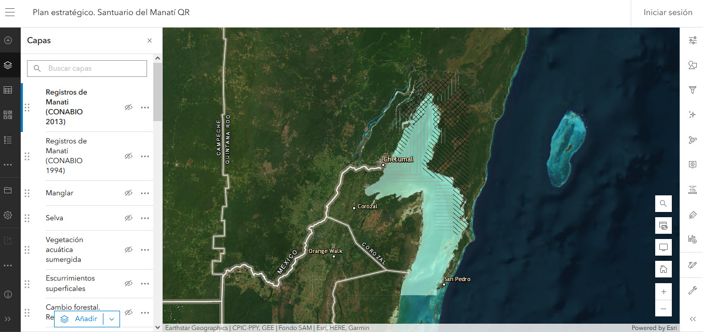
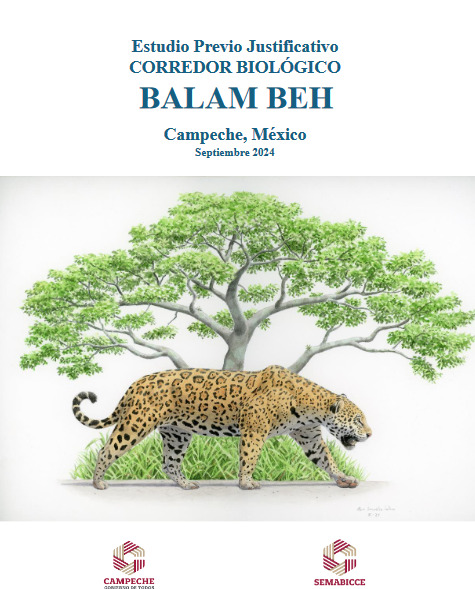

Protección de ecosistemas costeros urbanos

Plan estratégico, Santuario del Manatí, Quintana Roo

Atlas del municipio de Calakmul

Estudio Previo Justificativo del corredor biológico Balam Beh, Campeche

Actualización del Programa de Manejo Ciénagas y Manglares de la Costa Norte de Yucarán